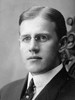

|
Thomas Fielding Burton
Born 12 MAY 1871 OGDEN,Weber,UT
Died 8 APR 1963 Ogden, UT
Married
Alice Maud Call 22 June 1898 Salt Lake City, UT
The 1st child of William Walton Burton and Sarah Fielding |
|
Arthur Fielding Burton
Born 30 JUN 1873 OGDEN,Weber,UT
Died 14 MAY 1949 Afton, WY
Married Kittie Calpurna Dixon 10 Oct 1894 Salt Lake City, UT
The 2nd child of William Walton Burton and Sarah Fielding |
|
Alice Ann Burton
Born 2 SEP 1875 OGDEN,Weber,UT
Died 28 FEB 1957 Afton, WY
Married Clarence Gardner 8 Oct 1897 Salt Lake City, UT
The 3rd child of William Walton Burton and Sarah Fielding |
* |
Parley Parson Burton
Born 10 JUL 1878 OGDEN,Weber,UT
Died 8 MAR 1883 OGDEN,Weber,UT
The 4th child of William Walton Burton and Sarah Fielding |
|
Wilford Fielding Burton
Born 17 MAY 1882 OGDEN,Weber,UT
Died 5 NOV 1969 Afton, WY
Married Ivie Irene Rainey 22 Dec. 1910 Salt Lake City, UT
The 5th child of William Walton Burton and Sarah Fielding |
* |
Emma Burton
10 AUG 1884 - 10 AUG 1884 OGDEN,Ut
The 6th child of William Walton Burton and Sarah Fielding |
|
Ephraim Fielding Burton
(another picture).
Born 3 APR 1886 Smithfield,Cache,UT
Died 7 MAY 1924 Salt Lake City
Married
Christine Henrietta Kolshorn 18 Sep 1918 Laramie, WY
Family picture. This shows them with their little daughter "Little Pal" (Vilate Agnes Burton).
She died shortly after her father did (On October 12 at age 5).
The 7th child of William Walton Burton and Sarah Fielding |
 |
George Fielding Burton
Born 27 APR 1888 Afton,Lincoln,WY
Died 14 MAY 1971 Afton, WY
Married
Mary Frances Poulter 14 Jun 1911 Salt Lake City, Salt Lake,Utah
The 8th child of William Walton Burton and Sarah Fielding |
 |
Josephine Burton
Born 23 DEC 1890 Afton,Lincoln,WY
Died 18 June 1989 Orem, UT
Married
William Lester Bagley 3 Apr. 1918 Salt Lake City, Salt Lake,Utah
The 9th child of William Walton Burton and Sarah Fielding |

 symbol is a link to a family group chart.)
symbol is a link to a family group chart.)
{kind=link}
{kind=link}